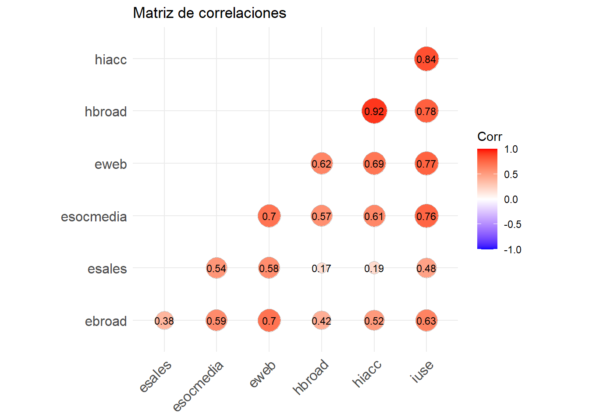
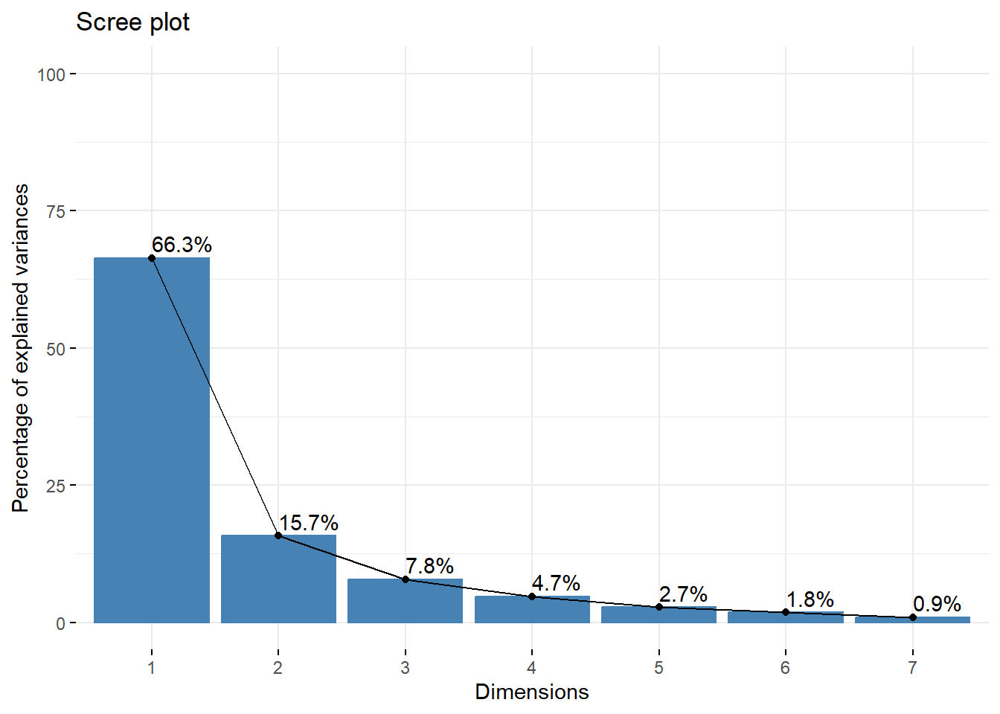
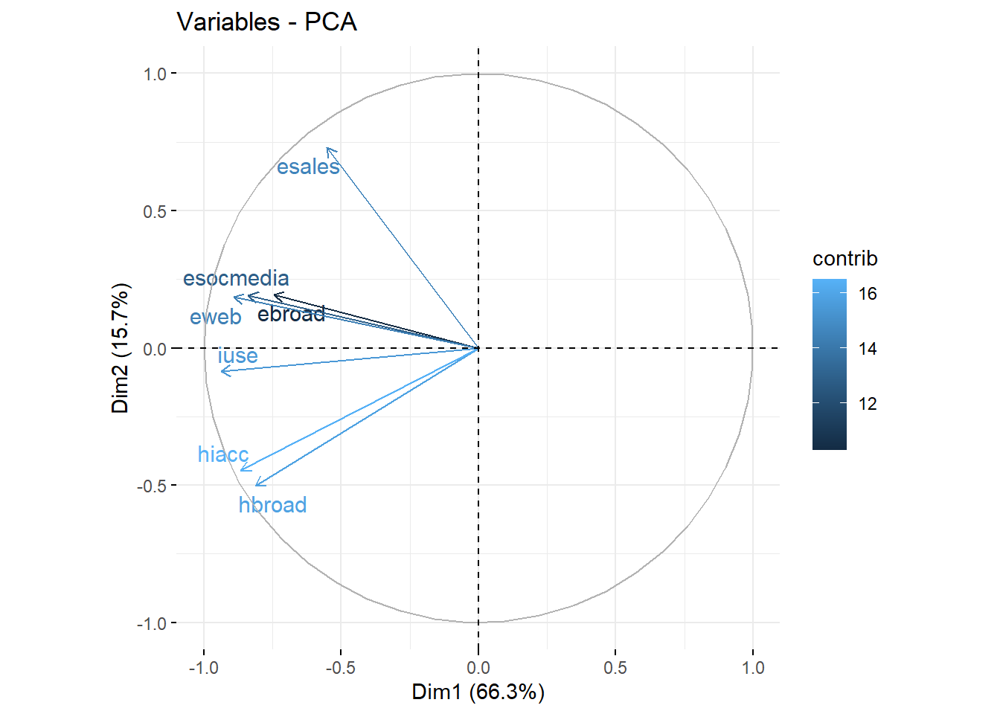
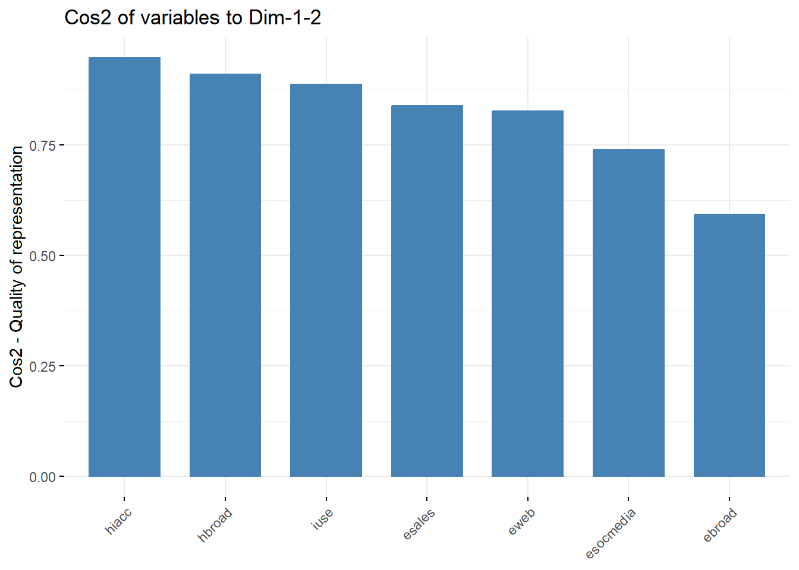
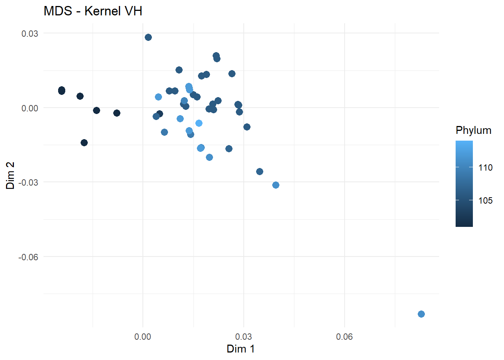
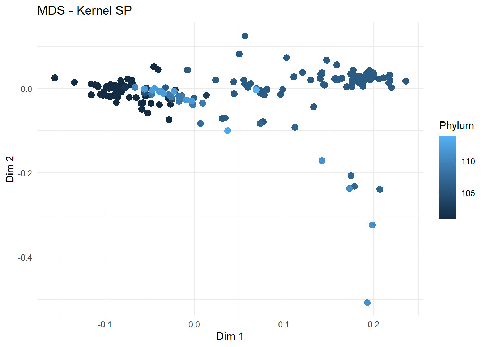
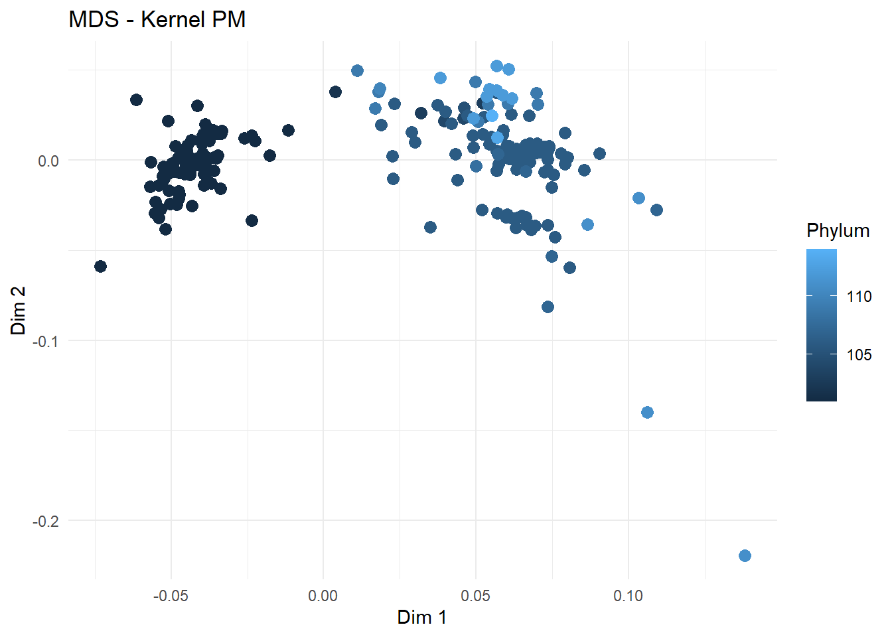

data_TIC <- read.csv("problema1_ACP.csv",header=TRUE)Ejercicios de ACP y MDS
20582- Análisis de Datos para el GMAT
Problema 1
En el siguiente enlace encontraréis datos de España correspondientes al año 2021, organizados en 7 variables: 4 relacionadas con el uso de las tecnologías de la información y la comunicación (TIC) en las empresas, y 3 vinculadas al uso de estas tecnologías por la población y al equipamiento tecnológico de los hogares. Las variables son las siguientes:
ebroad: porcentaje de empresas con acceso a Internet de banda ancha (broadband).
esales: porcentaje de empresas que realizan ventas electrónicas.
esocmedia: porcentaje de empresas que utilizan redes sociales.
eweb: porcentaje de empresas con sitio web.
hbroad: porcentaje de hogares con acceso a Internet de banda ancha.
hiacc: porcentaje de hogares con acceso general a Internet, independientemente del tipo de conexión.
iuse: porcentaje de individuos que utilizan Internet.
Apartado a
Realizad un análisis exploratorio de los datos, acompañado de un resumen de las observaciones más relevantes en relación con el contexto del problema, para ello crea una variable region con los siguientes niveles:
Europa Occidental” = c(“BE”, “FR”, “DE”, “AT”, “NL”, “LU”, “IE”),
Europa del Sur” = c(“ES”, “IT”, “PT”, “EL”, “CY”, “MT”),
“Europa del Este” = c(“CZ”, “BG”, “HU”, “PL”, “RO”, “SK”),
“Países Nórdicos” = c(“DK”, “SE”, “FI”, “NO”),
“Países Bálticos” = c(“EE”, “LV”, “LT”)
Aseguraos de incluir, un análisis de la matriz de correlaciones.
Agregamos la columna region:
data_TIC <- data_TIC %>%
mutate(region = case_when(
X %in% c("BE", "FR", "DE", "AT", "NL", "LU", "IE") ~ "Europa Occidental",
X %in% c("ES", "IT", "PT", "EL", "CY", "MT") ~ "Europa del Sur",
X %in% c("CZ", "BG", "HU", "PL", "RO", "SK","HR","SI") ~ "Europa del Este",
X %in% c("DK", "SE", "FI", "NO") ~ "Países Nórdicos",
X %in% c("EE", "LV", "LT") ~ "Países Bálticos"
))
colnames(data_TIC)[1] "X" "ebroad" "esales" "esocmedia" "eweb" "hbroad"
[7] "hiacc" "iuse" "region" Veamos las estadísticas descriptivas por región:
summary_stats <- data_TIC %>%
group_by(region) %>%
summarise(across(where(is.numeric), list(mean = mean, sd = sd), na.rm = TRUE))
summary_stats# A tibble: 5 × 15
region ebroad_mean ebroad_sd esales_mean esales_sd esocmedia_mean esocmedia_sd
<chr> <dbl> <dbl> <dbl> <dbl> <dbl> <dbl>
1 Europ… 97.6 1.72 21.7 9.12 67.3 8.16
2 Europ… 93 5.53 18 6.78 47.2 7.55
3 Europ… 94.7 4.89 19.8 5.64 66.5 11.8
4 Paíse… 98 2.65 22 8.89 55.7 4.04
5 Paíse… 99 1.73 32 7.21 78.7 1.53
# ℹ 8 more variables: eweb_mean <dbl>, eweb_sd <dbl>, hbroad_mean <dbl>,
# hbroad_sd <dbl>, hiacc_mean <dbl>, hiacc_sd <dbl>, iuse_mean <dbl>,
# iuse_sd <dbl>Definamos la matriz de correlaciones:
Visualizemos la matriz de correlaciones:
ggcorrplot(R, method = "circle", type = "lower", lab = TRUE, lab_size = 3, digits = 2, title = "Matriz de correlaciones")
El gráfico de la matriz de correlaciones refleja las relaciones entre las variables numéricas de los datos:
Correlaciones altas:
- hbroad y hiacc (0.92): Existe una relación muy fuerte entre el porcentaje de hogares con acceso a Internet de banda ancha y el acceso general a Internet. Esto tiene sentido, ya que la banda ancha es la tecnología más utilizada para el acceso doméstico.
- iuse y hiacc (0.84): El porcentaje de individuos que utilizan Internet está estrechamente relacionado con el acceso general a Internet en los hogares.
- iuse y hbroad (0.78): Los hogares con banda ancha tienen un fuerte impacto en el uso de Internet por los individuos.
Correlaciones moderadas:
- eweb y esocmedia (0.69): El uso de sitios web por parte de las empresas está moderadamente correlacionado con el uso de redes sociales. Esto sugiere que las empresas más digitalizadas tienden a adoptar múltiples tecnologías TIC.
- esocmedia y iuse (0.76): El uso de redes sociales en las empresas parece estar relacionado con el uso generalizado de Internet en la población.
- eweb y hbroad (0.62): Las empresas con sitios web tienden a estar en países con alta penetración de banda ancha.
Correlaciones bajas o débiles:
- esales y eweb (0.17): La relación entre las ventas electrónicas y la presencia de sitios web en las empresas es débil. Esto podría indicar que tener un sitio web no siempre se traduce en ventas en línea.
- ebroad con otras variables: La banda ancha en las empresas (ebroad) muestra una correlación baja con otras variables, lo que sugiere que su impacto puede estar menos relacionado con las tendencias digitales generales de la población y los hogares.
No se observan correlaciones negativas significativas, lo que indica que las variables están alineadas hacia el uso e integración de tecnologías.
Las tecnologías TIC están interrelacionadas, especialmente en hogares (hbroad, hiacc, iuse) y empresas digitalmente avanzadas (eweb, esocmedia). El acceso a Internet en los hogares y su banda ancha están claramente relacionados con el uso de Internet en la población. Las ventas electrónicas (esales) muestran una correlación más débil, sugiriendo que las infraestructuras digitales son necesarias pero no suficientes para garantizar altos niveles de adopción de e-commerce.
Apartado b
Realizad una reducción del número de variables utilizando un Análisis de Componentes Principales (PCA). Justificad si trabajaréis con la matriz de covarianzas o la de correlaciones, considerando las características de los datos. Evaluad la idoneidad de la reducción propuesta, indicando claramente el criterio empleado para seleccionar el número de componentes principales a retener. Finalmente, interpretad las componentes principales seleccionadas, describiendo qué representan en el contexto de los datos y cómo contribuyen al análisis.
Sabemos que la matriz de covarianzas se utiliza cuando las variables tienen las mismas unidades de medida y la misma escala. Recordemos que la covarianza mide la relación lineal entre las variables, pero no está normalizada. Esto significa que la covarianza depende de las unidades de las variables, por lo que puede ser más difícil de interpretar si las variables tienen escalas muy diferentes. Por otro lado, la matriz de correlaciones se utiliza cuando las variables tienen diferentes unidades de medida o rangos de valores muy distintos. En este caso, las variables de interés están en porcentaje pero las escalas de las variables pueden variar. Enotnces, trabajamos con la matriz de correlaciones. Esto asegura que las variables sean comparables y que los componentes principales no estén sesgados por las escalas de las variables.
Seleccionamos solo las variables numéricas, otra vez y estándarizar los datos:
data_standardized <- scale(data_numeric)Realizemos el PCA
pca_result <- prcomp(data_standardized, center = TRUE, scale. = TRUE)Los valores propios muestran el porcentaje de varianza explicado por cada componente principal:
get_eigenvalue(pca_result) eigenvalue variance.percent cumulative.variance.percent
Dim.1 4.64389223 66.3413175 66.34132
Dim.2 1.10116015 15.7308594 82.07218
Dim.3 0.54694711 7.8135301 89.88571
Dim.4 0.32755960 4.6794228 94.56513
Dim.5 0.19113964 2.7305663 97.29570
Dim.6 0.12374504 1.7677862 99.06348
Dim.7 0.06555623 0.9365176 100.00000Observamos que las dos primeras componentes principales explican aproximadamente el 81% de la variación total. Puede ser razonable, trabajar con esas dos componentes para el análisis posterior de estos datos.
Un método alternativo para determinar el número de componentes principales es observar el diagrama de valores propios ordenados de mayor a menor. El número de componentes se determina en el punto, más allá del cual los valores propios restantes son todos relativamente pequeños y de tamaño comparable.
fviz_eig(pca_result, addlabels = TRUE, ylim=c(0,100))
También podemos observar:
fviz_pca_var(pca_result, col.var = "contrib",repel = TRUE) 
El gráfico anterior también se conoce como círculo de correlación variable. Muestra las relaciones entre todas las variables. Se puede interpretar de la siguiente manera:
Las variables correlacionadas positivamente se agrupan.
Las variables correlacionadas negativamente se colocan en lados opuestos del origen de la trama (cuadrantes opuestos).
La distancia entre variables y el origen mide la calidad de la representación de las variables, las que están alejadas del origen están bien representadas.
La calidad de representación de las variables se llama cos2 (coseno cuadrado, coordenadas cuadradas). Es posible crear un diagrama de barras de las variables cos2:
var <- get_pca_var(pca_result)
fviz_cos2(pca_result, choice = "var", axes = 1:2)
Un cos2 alto indica una buena representación de la variable en el componente principal. En este caso, la variable se coloca cerca de la circunferencia del círculo de correlación.
Un cos2 bajo indica que la variable no está perfectamente representada por los PC. En este caso, la variable está cerca del centro del círculo.
El biplot es un gráfico que permite representar las variables originales y las observaciones transformadas en los ejes de componentes principales.
Cada flecha corresponde a una variable.
Nos fijamos primeramente en las direcciones de las flechas y su sentido.
Dos flechas que apunten al mismo lugar indica correlación alta.
Dos flechas con sentidos diferentes pero en la misma dirección indican una correlación negativa.
Cuando dos variables no están correladas en absoluto, se observan dos flechas apuntando en direcciones totalmente perpendiculares.
En cuanto a la diferencia en la longitud de las flechas, una menos larga informa que su variable está peor representada que una de largo mayor. Es una forma de medir la calidad de representación.
fviz_pca_biplot(pca_result, repel = TRUE,
col.var = c("red", "blue", "green", "purple", "orange", "yellow", "pink"),
col.ind = "#696969")
En el gràfico anterior podemos observar lo siguiente:
Todas las variables originales tienen influencia en las componentes principales, como lo demuestra la presencia de flechas para cada una de las variables.
La variable que tienen una flecha más larga, tiene un impacto considerable en la primera componente principal (Dim1).
La variable hbroad tiene una flecha en dirección similar a 45 grados entre las dos variables, mostrando que influye tanto en Dim1 como en Dim2.
Las variables como eweb y esocmedia están más asociadas con Dim2, dado que sus flechas tienen un ángulo cercano a la vertical.
esales está más alineada con la Dim1
Variables como hbroad y hiacc tienen influencia en ambas dimensiones, ya que sus flechas no están alineadas completamente con ninguna de las dos componentes principales.
Las observaciones se distribuyen principalmente a lo largo de Dim1 (que explica el 66.3% de la varianza), indicando que esta dimensión capta la mayor parte de las diferencias entre las observaciones.
Observaciones como la 2, 15 y 11 se destacan en el lado positivo de Dim1, lo que puede sugerir altos valores en variables asociadas como esales.
La observación 16 se encuentra en el extremo negativo de Dim1, lo que indica valores bajos en las variables que contribuyen positivamente a esta dimensión.
La segunda componente principal (Dim2), que explica el 15.7% de la varianza, parece separar moderadamente las observaciones con base en variables como eweb y esocmedia, aunque su contribución es menor en comparación con Dim1.
En general, el gráfico muestra que la primera componente principal (Dim1) domina al explicar la mayor parte de la variabilidad en los datos, mientras que la segunda componente (Dim2) capta patrones adicionales en las variables relacionadas con la interacción web y los medios sociales (eweb, esocmedia).
Problema 2
El metabolismo se caracteriza por reacciones químicas vinculadas entre sí, creando una compleja estructura de red. Una representación simplificada del metabolismo, que denominamos red metabólica abstracta, es un grafo en el que las vías metabólicas son nodos y existe una arista entre dos nodos si sus correspondientes vías comparten uno o más compuestos.
Para explorar los potenciales y límites de una representación tan básica, hemos empleado tres tipos de kernels (distancias entre grafos):
VH (Vertex histogram): solo tiene en cuenta si las etiquetas de los nodos de los grafos que se comparan son iguales o no.
SP (Shortest-Path): compara los grafos en función de sus caminos más cortos. Intuitivamente, esto significa medir lo fácil o difícil que es conectar, a través de compuestos compartidos, parejas de caminos en los dos grafos.
PM (Pyramid Match): mide la similitud de las características topológicas (por ejemplo, la conectividad) de los nodos con la misma etiqueta en los dos grafos comparados.
La práctica consiste en representar gráficamente (con solo 2 coordenadas principales) las matrices de similitud generadas por cada kernel coloreando los puntos de acuerdo al grupo de animales de acuerdo a su phylum.
Los ficheros necesarios para realizar la práctica los podéis descargar de la página del curso en Aula Digital.
Carga los datos:
- Cargar las matrices de similitud:
sim_matrix_vh <- as.matrix(read.table("ANIMALS-matrixVH.txt"))
sim_matrix_sp <- as.matrix(read.table("ANIMALS-matrixSP.txt"))
sim_matrix_pm <- as.matrix(read.table("ANIMALS-matrixPM.txt"))- Cargar los phylums
phylum_data <- read.table("fileListANIMAL_phylum.txt")
phylums <- phylum_data$V2Utilizamos MDS para la reducción de dimensión:
mds_vh <- cmdscale(as.dist(1 - sim_matrix_vh), k = 2)
mds_sp <- cmdscale(as.dist(1 - sim_matrix_sp), k = 2)
mds_pm <- cmdscale(as.dist(1 - sim_matrix_pm), k = 2)Visualización:
Gráfico para VH
df_vh <- data.frame(PC1 = mds_vh[, 1], PC2 = mds_vh[, 2], Phylum = phylums)
plot_vh <- ggplot(df_vh, aes(x = PC1, y = PC2, color = Phylum)) +
geom_point(size = 3) +
labs(title = "MDS - Kernel VH", x = "Dim 1", y = "Dim 2") +
theme_minimal() +
theme(legend.position = "right")
plot_vh
Gráfico para SP
df_sp <- data.frame(PC1 = mds_sp[, 1], PC2 = mds_sp[, 2], Phylum = phylums)
plot_sp <- ggplot(df_sp, aes(x = PC1, y = PC2, color = Phylum)) +
geom_point(size = 3) +
labs(title = "MDS - Kernel SP", x = "Dim 1", y = "Dim 2") +
theme_minimal() +
theme(legend.position = "right")
plot_sp
Gráfico para PM
df_pm <- data.frame(PC1 = mds_pm[, 1], PC2 = mds_pm[, 2], Phylum = phylums)
plot_pm <- ggplot(df_pm, aes(x = PC1, y = PC2, color = Phylum)) +
geom_point(size = 3) +
labs(title = "MDS - Kernel PM", x = "Dim 1", y = "Dim 2") +
theme_minimal() +
theme(legend.position = "right")
plot_pm